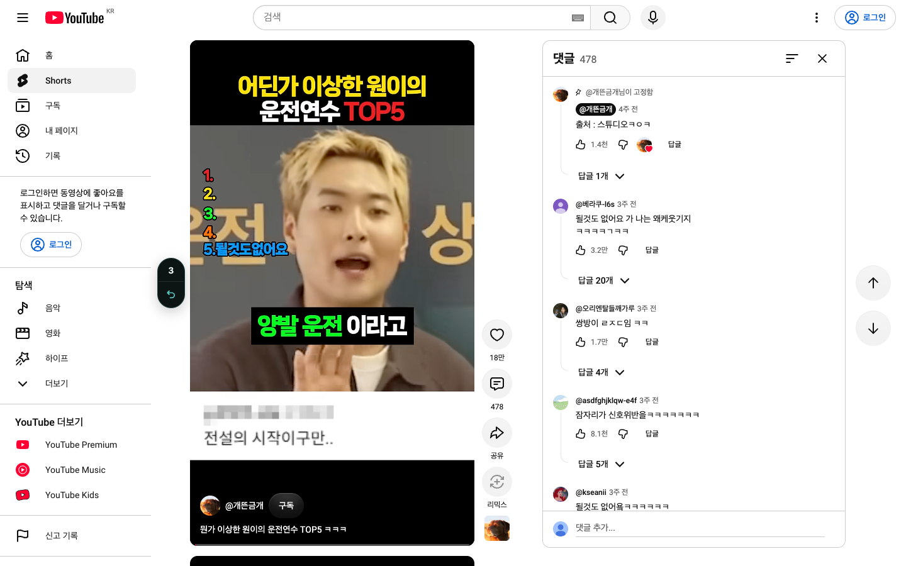
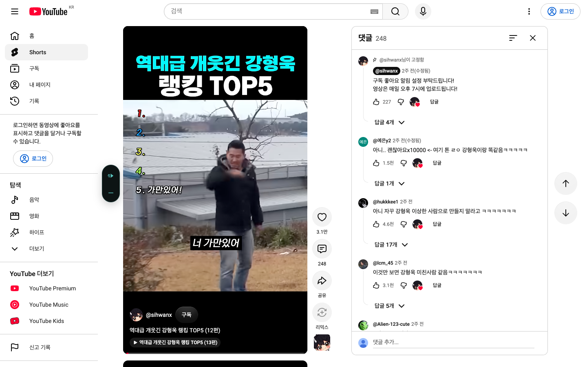

실제 유튜브 · 실제 확장 캡처

44px 안에 3과 되돌리기. 로고와 제목 없이, 영상과 사이드바 사이에 정렬했습니다.
항상 왼쪽오른쪽 대체 배치와 영상 위 배치를 제거했습니다. 예전 위치 설정도 왼쪽으로 통일됩니다.
열고 닫으면 함께 이동패널이 움직이는 동안 잠시 숨기고, 이동한 영상의 왼쪽에 다시 표시합니다. 되돌리기 버튼의 포커스도 유지합니다.
자리 없으면 잠시 숨김왼쪽 공간이 없을 때는 화면을 가리지 않습니다. 공간이 생기면 다시 표시합니다.
연속 6개에서 멈추는 표시도 같은 규칙
좁은 상태에서도 이어서 보기와 기준 낮추기를 사용할 수 있습니다.
같은 영상 · 댓글 열고 닫기 
댓글을 닫으면 왼쪽 카드로 돌아옵니다. 작은 버튼에도 이름과 툴팁이 있습니다.
확인한 범위
단위 검사 126개, 브라우저 전체 검사 78개 및 위치 추가 검사, 빌드와 패키지 검사를 통과했습니다. 위치를 위한 상시 반복 조회도 제거했습니다.
실제 캡처는 새 로그아웃 유튜브 프로필에 개발판을 설치하고, 테스트용 좋아요 기준 1억으로 넘긴 결과입니다. 연속 넘김 캡처에는 입력 제스처를 유지해 짧은 표시를 잡았습니다. 기본 500 기준이나 로그인된 릴스·틱톡의 전체 검증을 뜻하지 않습니다.